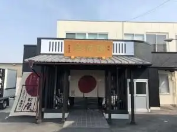

Japan / Aichi / Fuso
Fuso · Aichi
Fuso
Highlighted on the Aichi map.

Fuso Town Hall
Fuso Moriguchi Shokuhin Fuso So Honke
Fuso, Aichi · 0587-93-8670 · Official / source link
← Chitamihama · All towns in Aichi · Gamagori →
Other towns: Agui · Aichikonan · Aisai · Amashi · Anjo · Chiryu · Chita · Chitamihama · Gamagori · Handa · Hekinan · Higashiura · Ichinomiya · Inazawa · Inuyama · Iwakura · Kanie · Kariya · Kasugai · Kitanagoya · Kiyosu · Komaki · Kota · Minamichita · Miyoshiaichi · Nagakute · Nagoya · Nishio · Nisshin · Obu · Oguchi · Oharu · Okazaki · Owariasahi · Seto · Shinshiro · Shitara · Tahara · Takahama · Taketoyo · Tobishima · Toei · Togo · Tokai · Tokoname · Toyoake · Toyohashi · Toyokawa · Toyone · Toyota · Toyoyama · Tsushima · Yatomi
Back to all prefectures